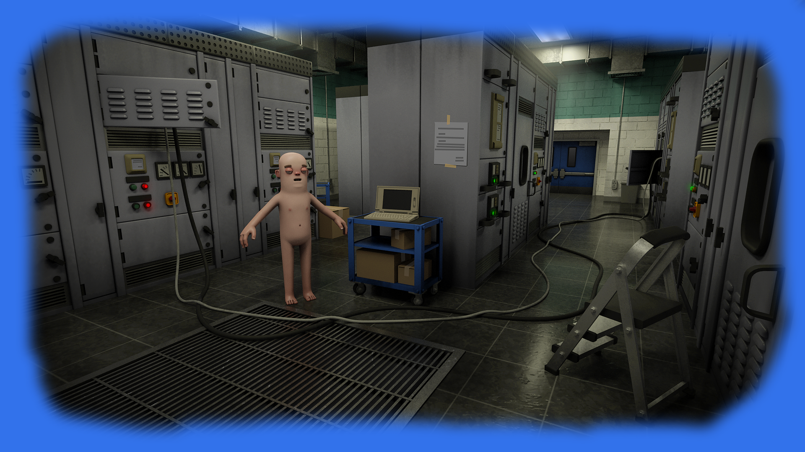

S&box (стилизованно от слова Sandbox) — компьютерная игра, создаваемая Facepunch Studios. В Sandbox планируется расширить возможности игроков, все привычные элементы игры Garry's Mod переносятся на новый движок Valve — Source 2. С помощью Source 2 планируется возможность создавать аддоны на языке программирования CSharp с «горячей загрузкой
В 2017—2018 годах, проект активно развивался, но с июня 2018 года разработка приостановилась. 27 апреля 2020 года на официальном сайте игры вышла новость от создателя s&box и оригинального Garry's Mod Гарри Ньюмана, где он рассказал причину остановки разработки. Ньюман посоветовал команде развивать далее Garry's Mod и Rust, из-за чего разработка остальных проектов прекратилась. Сам Гарри по возможности в одиночку стал разрабатывать s&box. Разработчик посчитал важным знать каждый элемент кода, «Что он делает, почему он это делает, что он не делает». Также было заявлено о переходе на движок Source 2.
